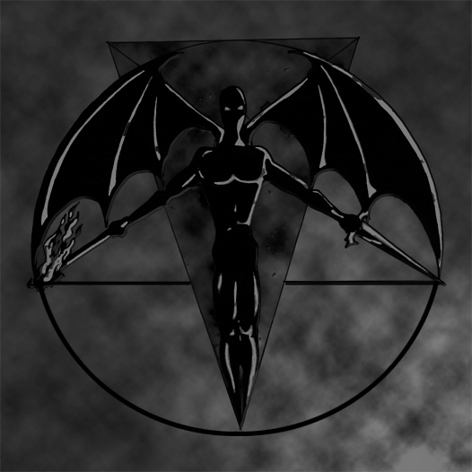

Valentin Scavr
Maledictum III:XXXI
Священный путь погибели в волчью пасть Бездны.… В разуме отверженного богами человека змеится тропа, бьющаяся о разломы тесной слепоты, неистовствующая во мраке рассудка, содрогающаяся всей своей черной, клубящейся плотью в распахнутой пульсирующей массе жадного, заглатывающего естества. Стиснутые в багряных кольцах мертвой хватки, темные откровения, как воспаленные грозы, дарят нечеловеческое страдание и передают сокровенное чувство внутреннего, непрекращающегося горения проклятой человеческой душе, извивающейся в сердце пламени, чадящей вослед уходящему без возврата…
Дьяволы черными ветвями древа Хаоса простерлись над ненасытной пастью, сгустились драконьей тьмой древней Ночи в тленных небесах, встали гигантскими тенями, как стражи и бессменные путники этих троп. Их обугленные дороги, проложенные прежде времен, сжатые в клубок Хаоса, вплетаются вглубь человеческого сердца, соединенные артериями с бренным существом. Они струятся токами изначальной крови по лезвию Зла, взрезающему покровы вселенского чрева, и взывают сквозь рев ураганов и крики гарпий к освобождению подобных Им, непокоренных духом, и поднимают нарождающихся чудовищ из плена материи умерщвляемой души.
Они движутся за гранью мира изможденных форм, набрасывая на святость траур, скрежеща когтями по изрезанной поверхности земли, ледяным дыханием растворяя щит Вселенной, пропуская нить времен сквозь холодные пальцы канувших в Бездне галактик. Они сопутствуют пути человека к его вечному проклятию и тревожат его раны, разделяя с ним все его черные терзания, и наслаждаются скорбью его умирающей души.… Навеки разлучая с упокоением, они гладят против шерсти злое, сильное дитя, завораживая его душу хладным величием посмертных сфер, замораживая его взгляд гранями диамантов своих, несущих прозрение, глаз.
Они движутся за чертой, врываясь извне в людскую явь, прерывая кошмарами долгий сон созерцающего в себе иллюзии, скованного судьбой человека, оставленного умирать от истощения, пожирать самого себя, слепнуть и глохнуть в пределах плотского разума. Их продвижение вглубь, до самых основ, совершает взрыв и заставляет принять превыше всех грехов грех тягчайшего, титанического отрицания, как растворение всех божественных законов в пропасти тотального небытия и чернейшего сатанизма. Поглощающие пространства и пьющие страх потерянной и растерзанной жертвенной души, в отчаянии взывающей к Ним сквозь нескончаемую протяженность Бездны, Они протянули струну, которой рассечено отчаяние, и низвергают в бездонную пустоту пожранной души все огненные страсти безжалостного к себе человека. Восставшие из небытия… переламывающие хребет божественности… вызывающие болезненные видения Смерти… Они достойны тех, кто Их возлюбил.
Они распутывают узлы памяти в человеческом естестве. Они приходят, презирая слабых, уничтожая инертных духом, запирая в костях тех, кто склоняет интеллектом мертвые, дозволенные законы. Их явленное в человеческих умах присутствие достойно катастрофы человеческого рода, что хранит в своих сердцах отзвуки Их незатихающей, исполинской ненависти к творцу всего этого. Существующие слишком долго, чтобы испытывать к кому-либо милосердие, прерывающие жизнь, чтобы обратить вовне время, Они воскрешают имена и лица, которым не было суждено существовать вновь на этой проклятой земле…
Их волей мертва и преломлена проклятая фатальность обезличенного создания, Их волей олицетворено и начертано духовное существо Ада мертвыми душами голодного демонизма на сырой поверхности звериной стихии. Ими сокрыты в насыщенных темных тонах множащиеся образы настойчивых хаотических структур враждебного существования, рвущихся вперед, порождающих чудовищные формы хищнической агрессии, чтобы никого не ввести в соблазн своим чужеродным нутром в преддверии неизбежного перерождения. Бесчеловечностью отображений ирреальной природы Зла, что бродит Их мудростью среди людей и кормится от Их глубинной сути, Они пестуют в темные времена прекраснейших жриц своей крови и предлагают достичь невозможного ценою любых жертв, но не Их милостью множатся на земле растлевающий порок и царственная глупость, не Их желанием вырождается знание об адских нравах в нищенское суеверие церковных шлюх. Они – иные в ином мире богоподобных подражаний, и, дьявольскими путями пронзая чужие сферы, как звезды, падшие с небес, Они приходят чужими богами, когда воссоздают грандиозные картины рассозданного миропорядка, превосходящие все представления устрашенного демонической одержимостью людского рассудка…. Не сотворенные человеком, сами не пребывающие творцами человека, Они остаются вне человеческого понимания…
Они – чужие, хтонические боги, и нет никого страшнее Их.… Все отношения с Ними – преступление против своего народа, того из которого взошел человек, злодеяние против самой человеческой расы, против того зыбкого мира, где воспрянула мятежная человеческая ветвь… против самого человека. Под вечным проклятием, под карой выжигания земным и небесным пламенем, поднимается вновь из пепла знание о Них в створах бытия, в умах и душах человечества, страшащегося тех, кому дано остановить и перебороть тот извечный, врожденный, инстинктивный ужас всего живого и безжизненного перед Ними, перед зрелой бесчеловечностью тех, кто обрывками обожженной кожи мог свидетельствовать свою достойность перед Темным Повелителем.
Чужие, недобрые глаза смотрят на человеческий мир… Глаза в лицевых впадинах Горгонейона, угли в глазницах темных идолов, пламенеющие страстью, суровой и всегда необходимой, глаза кровожадных чудовищ, наделенных звериными чертами, должных охранить от низменного земли то нечеловеческое естество первородного, необузданного могущества, и отпугнуть от него праздных разумом, инертных духом, движимых ничтожными помыслами. Чуждый для человечества, чуждый для света источник мудрости и святотатства зияет в этих глазах, глазах Дьяволов, полных темного гнева и отвращения к человеческой природе того, кто предстает перед ними, но кто способен, превозмогая боль, принять грех этих глаз, способен не опустить свой взгляд перед ужасающим, черным, непостижимым существом Бездны, и твердо платит цену такого соглашения – человеческое в нем должно умереть.
Они безжалостны в своих отношениях с человеком, и человеку дано знать о том, что никому не проследить Их пути в необъятном безмолвии Бездны, никому не подняться до Их сфер в позорной животной бренности, никому не освободится от врожденной слепоты до тех пор, пока божественная тварь скрывается за человеком. Можно лишь видеть скольжение чешуйчатых пластин в сквозных ранах, в следах Их хищных плавников, разрезающих твердь земли там, где Они проявляются на грани ужасающего реалистичного воплощения. И лишь ощутив Их близкое дыхание беспокойными токами запертой крови, можно зреть в омутах Их глаз тревожную, смятенную глубину своего человеческого несовершенства, но Их желания нельзя угадать, как невозможно ни помнить, ни охватить то искусство Их изощренного интеллекта, что проявляет себя в рельефе мозга изначальным изъяном, отбрасывая тени по углам людского разума, перед которыми пасуют каждый раз все изгибы человеческой логики.
Их вопиющая чудовищность – лишь искажение в видениях Вселенной, иной исход в восприятии того, что вне границ человеческого мира ведет к тотальному изменению внутренней, тварной природы человека, выходящего из пределов дозволенного познания. Тайная спираль, уводящая из сна, скрытая в противоестественном начале, сводит в Их реальность, все облики которой слишком чужеродны для земного существования, слишком сложны и мучительны, чтобы избрать для себя обыкновенный человеческий разум. Поражая воображение гротескными кошмарами, обрекая слабых на безумие, сильных на мудрость, побуждая темный дух к осознанию себя властителем, избравшим своим средоточием умерщвляемую человеческую плоть, Они призывают к действию изнутри, к штурму барьеров снаружи, побуждая следовать вперед темными, властными мыслями вопреки человеческому эгоцентризму. Их желания заставляют скользить в глубинах непознаваемого, высшего инстинкта, и взрывать бренный потенциал запертого в судьбе человека, уводя за собой его высвобожденное дьявольское начало, темный разум духовного существа, оставляя слепой, бренный рассудок блуждать больной тенью в непостижимом мире, цепляясь за обломки прежних, изношенных форм.
Разрушением внешних и внутренних канонов, Дьяволы приводят к близости с собой тех, кому не кажется уродством красота Их жутких, вечно изменчивых обликов, кому не чуждо обретение себя среди Них, в окружении Их дикой, неистовой природы, и в ком достойна возрождения та изысканная, неповторимая часть, исходящая мощью в безраздельность Тьмы. Лишь немногие – те, кто уже мертвы для этого мира, и живы для Них, – пожирают плоть, что разверзается под их ногами, но лишь избранные из них способны осознавать, куда устремятся они потом, когда ощутят горящее небо под ногами. Те, добровольно избравшие своей опорой Зло, способные в своем бесчеловечном пробуждении от человеческого сна выброситься за грань божественности и воплотить чуждую необузданность в неистовое насилие над собственной, человеческой природой в угоду своему сокровенному Дьяволу, осознают в себе могущественную силу дерзко сбросить ненавистные путы божественной власти и быть принятыми с достоинством, как равные во Зле.
В ком воплощается мощь Дьяволов в безудержную силу титанического упорства человека в сопротивлении своему тварному существу, кто с проклятой настойчивостью штурмует высоты себя, как человека, – тому достаточно сил сокрушить себя как творение, и подняться в воплощении величественной мечты, в бунте непреклонной гордости мятежного существа, – во всем проявляя необузданный, рассеченный пламенем, дышащий темным торжеством дьявольский лик каждого из них, дух подлинного Дьявола.
Древними богами Зла пребывают Дьяволы Тьмы превыше всех богов пантеона мира в непрерывно возрастающем превосходстве над самими собой, как бесконечность, способная множить в себе пространства и разрывать тенета, что опутывают нечеловеческое начало, всегда разрушая всякую цикличную завершенность. Не признающие и призрака лжи, отвергающие предательство, как наихудшее из человеческих зол, презирающие замкнутую на себе умиротворенную святость, как худшую из проявленных основ божественной власти, Они никогда не примут унижения от тех, кого приводят к соглашению с Сатаной в борьбе против божественного мира, и не приветят тех, кто ищет в Них оправдание своей немощности. Им нужны те, кто проведут через себя все цвета высвобождающих страданий, и, кто обрушит Ад на бренные горизонты, подминая под себя ростки пагубного человеколюбия, избавляя плоть от унизительного богоподобия, вторгаясь в запретную высь в безбожном порыве дьявольского преображения.
Они предлагают принять освобождение от оков от своей собственной руки, Они ждут тех, кто призовет Их к себе и примет Их вместо отца и матери, кто разделит с Ними плоть и кровь в зловещем пиршестве над собой, и, вопреки мутному смешению божественной и животной крови своих вен, вкусит яда от Их начал и преступит предел всех человеческих возможностей в желании далее испытывать собой на прочность пределы Вселенной. Чтобы никого не соблазнять, Они дают испытать экстаз Смерти.… Сводят в лабиринт Безумия.… Даруют удовольствие от мистической перверсии духовной опоры. Они поглощают живьем сопротивляющиеся души, и стравливают с цепи не находящие себе предела, вечные страдания. В том выражается право Дьяволов на отбор достойнейших среди достойных, в том предстает Их роковой выбор, что пал на обреченные головы тех, кто сам избрал себе Их войну ценой своих собственных душ, приняв в себя все то, что слагает тот неистовый, суровый, опаснейший опыт нахождения во Зле – быть Злом, подобно Им самим…
Они наступают в своих последователях, в своих сыновьях, подобных Им, таких же, темных и бездонных разумом, как Они сами, таких же извечных, как Их кровь, так же пребывающих в боли, как Их нескончаемые жертвы. Они даруют своим вновь обретенным сыновьям изобилующий страданиями, жестокой мудростью и тяжелейшей ответственностью путь. Опасный, бесконечный, безжалостный. И более ничего, кроме возможности взять самому в недосягаемых высотах то, что будет принадлежать каждому из них – право на разорение и сожжение собственных небес… право, завоеванное Дьяволом…
В реальности, утомленной безликим Злом, отравленной апофеозом немочи массовых истерий, оплавленной страхом перед бледным безумием ядерного откровения, искаженными чертами проявляясь в фатальных символах бунтующей против человека природы, Дьяволы Тьмы, названные мстительными богами последнего апокалипсиса, снимают кровавую жатву с душ всего человечества, сдавливают тенями иррационального хаоса внутренний мир человека, упрочиваясь смятением в сердцах, вздымаясь несгибаемой волей в демонической натуре, увлекая в стремлении за собой к запретному могуществу, оставаясь духом неведомого противоречия в упорядоченной системе материи, тяготея слепым фатумом над устрашенными и смиренными. Абстрактными формой и реальными мощью, Они прорываются в святая святых, пронзая насквозь искупительные жертвы Вселенной, вычерчивая в людской памяти молнии, покрытых ржавым бесславием шрамов своих поруганных, повергающих в трепет Имен, даруя свободу нисходящим долу дорогам прогресса, созидая алчное племя, и оставаясь чужими для человека богами, внешними враждебными стихиями, разверстыми вовне безднами погибельного знания, дерзновенными высотами Зла, веющими над миром пламенами Ада...
Сатанинский инстинкт противостояния, изначальный дьявольский дух сопутствуют преступной мечте гибельного человека породниться с Ними…